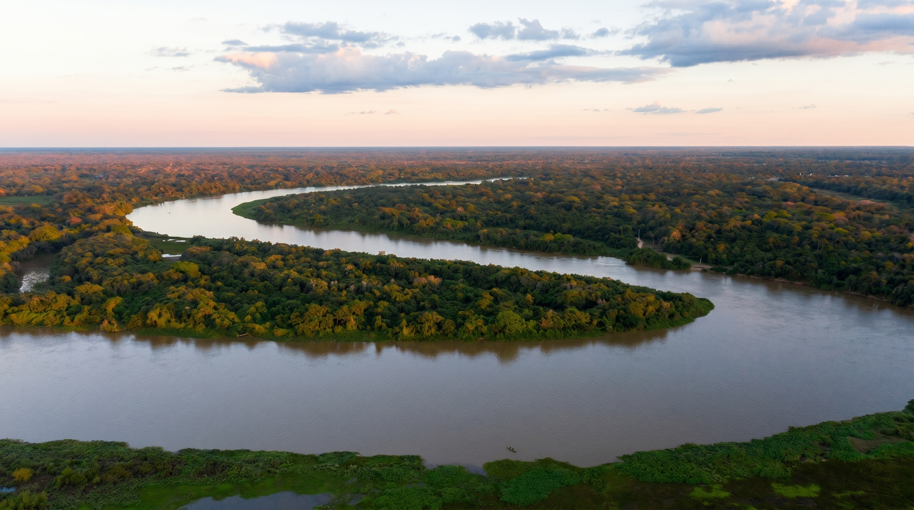
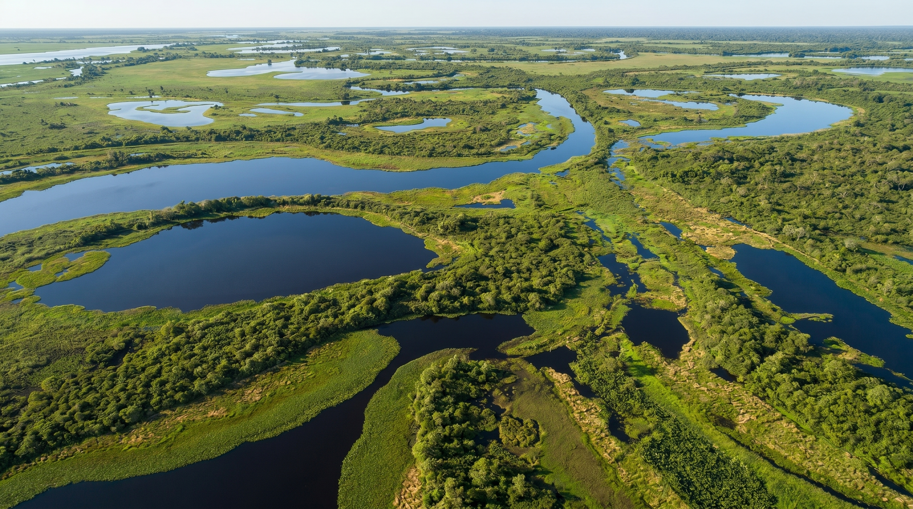
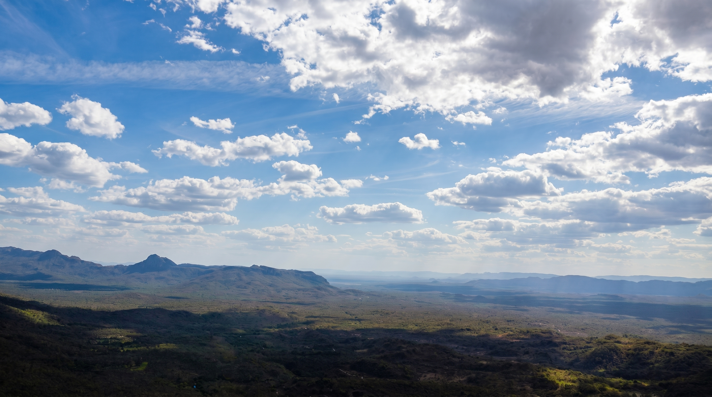
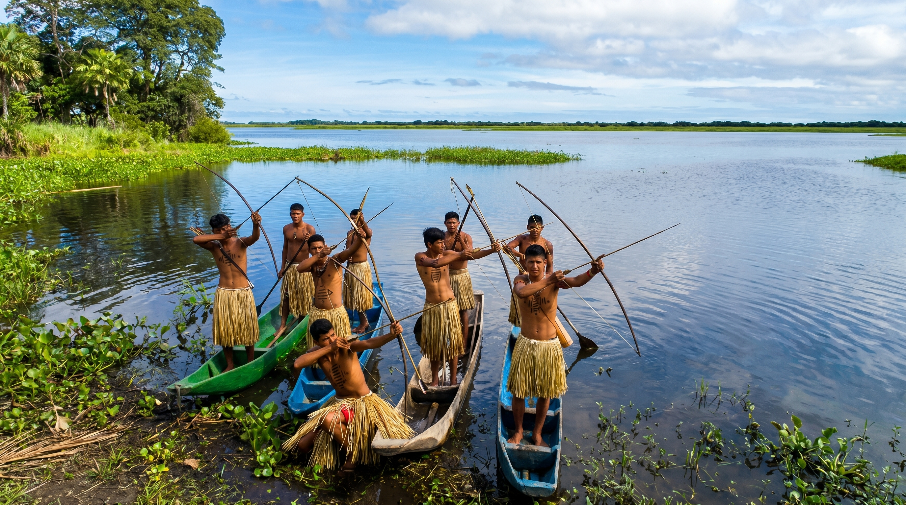

Centro-Oeste
Rio do Peixe - Bonito, Mato Grosso do Sul.
Sobre a região
A Região Centro-Oeste destaca-se por suas vastas paisagens naturais, grandes áreas de vegetação preservada e importante produção agropecuária. É uma região marcada pela presença do Cerrado, considerado a savana mais rica em biodiversidade do mundo, além de abrigar parte do Pantanal, uma das maiores áreas alagadas do planeta.

Área
1,61 milhão de km²
18,9% do território brasileiro.
População
16,7 milhões de habitantes
8,2% da população brasileira.
Quantidade de estados
4 estados
Goiás, Mato Grosso, Mato Grosso do Sul, Distrito Federal
Capital de referência
Brasília (DF)
Brasília é a capital federal do Brasil e possui grande importância política e administrativa.



Estados da região Centro-Oeste
Distrito Federal
Capital: Brasília
Goiás
Capital: Goiânia
Mato Grosso
Capital: Cuiabá
Mato Grosso do Sul
Capital: Campo Grande